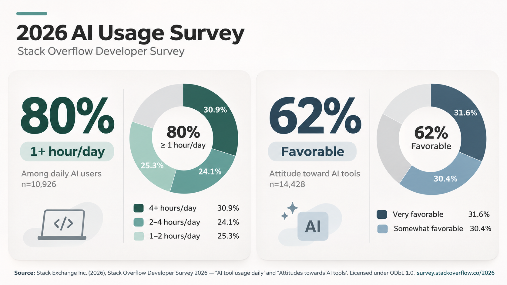
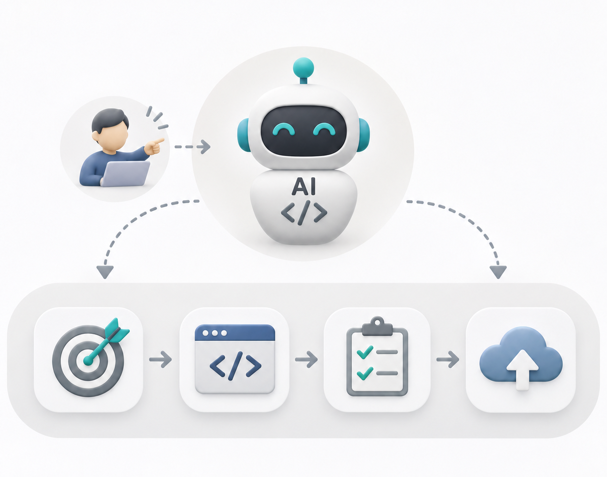
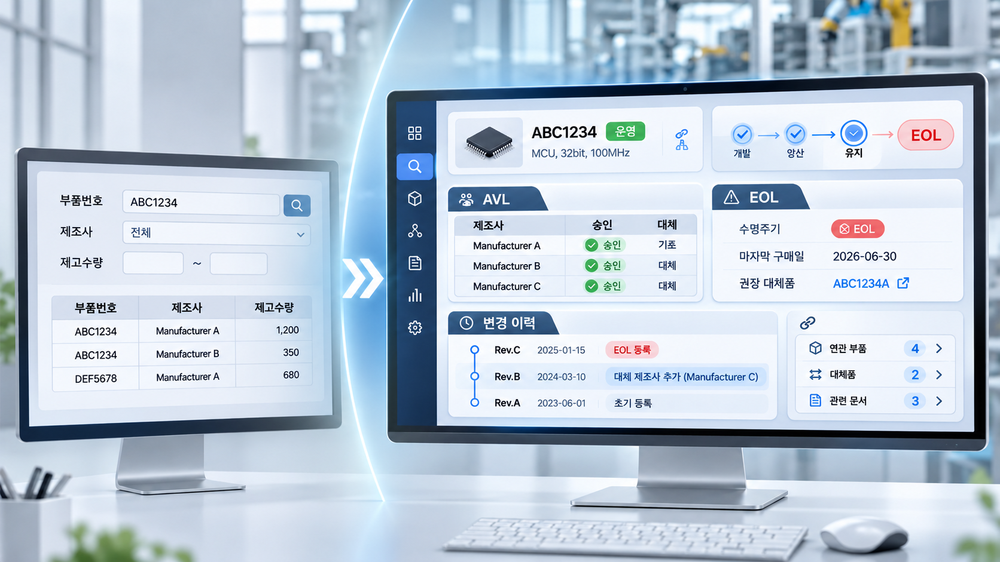
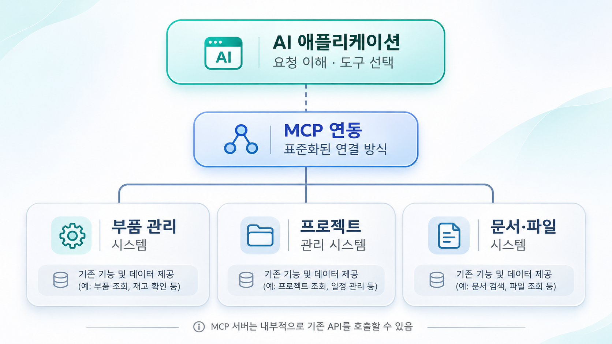
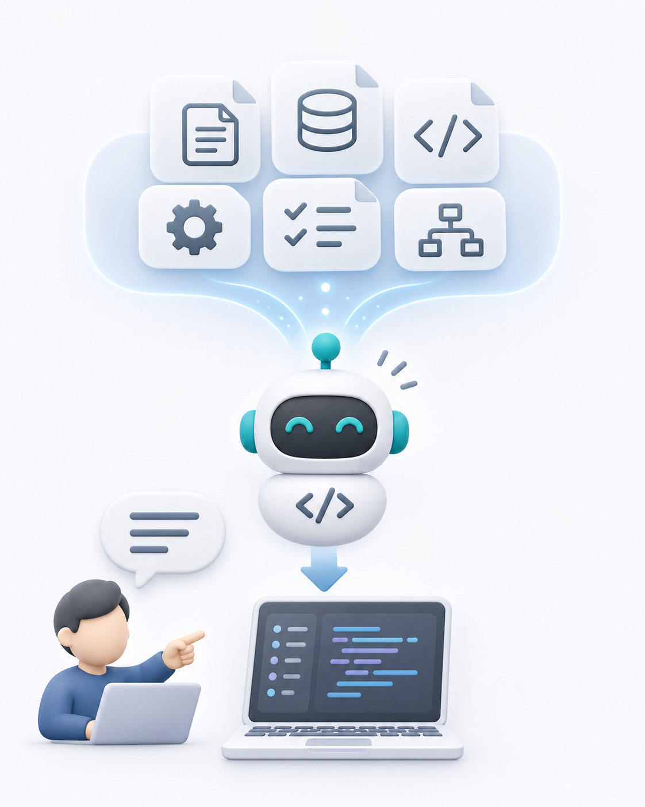
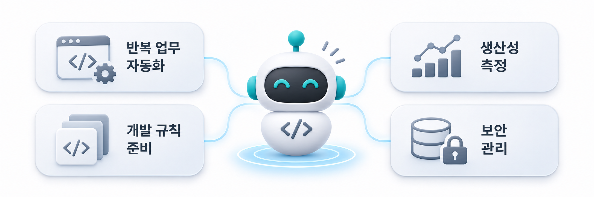

소프트웨어 개발 현장에 AI 혁명이 일어나고 있습니다.
몇 년 전만 해도 소프트웨어를 개발하려면 사람이 직접 프로그램 코드를 작성하는 것이 당연했습니다. 개발자는 기능을 설계하고, 필요한 기술을 조사하고, 프로그램을 작성한 뒤 오류를 찾아 수정하는 과정을 반복했습니다.
그런데 이제는 상황이 크게 달라지고 있습니다. 개발자가 AI에게 프로그램에 대한 아웃라인을 설명하면 AI는 데이터베이스 구조를 제안하고 화면과 프로그램 코드까지 작성합니다. 기존 프로그램을 분석해 오류를 찾아내거나 새로운 기능을 추가하는 작업도 할 수 있습니다.
즉, 개발자가 인터넷에서 기술 자료를 검색하고 매뉴얼을 확인하면서 한 줄씩 코드를 작성하는 대신, AI에게 원하는 기능을 설명하고 생성된 결과를 검토하면서 개발하는 방식이 빠르게 확산되고 있습니다.
개발 도구에 AI가 통합되고, 여러 개발자가 동시에 작업하는 협업 환경이 발전하면서, 이제는 단순히 코드를 빠르게 작성하는 수준을 넘어 프로그램을 시험하고 배포하는 과정까지 소프트웨어 개발 과정 전체에 영향을 미치고 있습니다.
실제로 AI가 일부 개발자만의 실험적인 도구를 넘어 일상적인 개발 환경으로 자리잡고 있습니다. 2026년 Stack Overflow 개발자 설문조사에 따르면, AI를 사용하는 응답자의 80%가 하루에 한시간 이상 AI를 활용하고 있습니다.

출처: Stack Overflow Developer Survey 2026
여기에서 궁금한 질문이 생깁니다.
“그렇다면 전문 영역인 산업용 소프트웨어도 AI를 활용하면 이전보다 훨씬 빠르고 쉽게 개발할 수 있을까요?”
가능성이 커진 것은 분명하지만, 실제 현장의 이야기는 생각보다 복잡합니다.
1. 사람이 직접 코딩하는 시대에서 AI와 함께 개발하는 시대로
1-1. AI가 바꾸고 있는 개발자의 작업 방식
소프트웨어 개발에 활용되는 AI는 눈부시게 발전하고 있습니다. 최근의 AI 개발 도구는 단순한 자동 완성 및 추천을 넘어, 여러 파일을 분석하고 기능 단위의 코드를 작성하거나 수정할 수 있습니다.
예를 들어 개발자가 기존 프로그램에 새로운 기능을 추가하도록 요청하면 AI가 기존 프로그램 구조를 확인하고, 필요한 파일을 수정하고, 테스트를 수행하도록 지원하기도 합니다. Visual Studio Code, Cursor, GitHub Copilot, Claude Code 등이 AI 도구를 활용하는 대표적인 개발 환경입니다.
AI 활용 방법은 크게 세 가지로 구분할 수 있습니다.
| 활용 방식 | 주요 역할 |
|---|---|
| 코드 작성 보조 | 개발자가 작성하는 코드를 추천하거나 자동완성 |
| 대화형 개발 지원 | 요구사항을 설명하면 코드를 생성하고 수정 방법을 제안 |
| AI 코딩 에이전트 | 여러 파일의 수정, 테스트 실행 등 일련의 작업을 수행 |
그 중, 최근에는 AI 코딩 에이전트(Coding Agent)가 주목받고 있습니다.
보통의 AI 보조 도구는 개발자의 질문에 답하거나 코드를 작성하여 추천하는 정도이지만, AI 에이전트는 주어진 목표를 달성하기 위해 여러 작업을 AI가 순서대로 수행합니다.
물론 이러한 기능들이 개발자를 완전히 대체할 수는 없습니다. 작업 권한과 실행 범위, 결과 검토를 위한 기준 등은 여전히 사람이 결정해야 합니다.

1-2. 'Vibe Coding'이라는 새로운 개발 방식
최근에는 Vibe Coding이라는 표현도 등장했습니다.
개발자가 세부적인 프로그램 구조나 코드를 직접 작성하지 않고 자연어로 원하는 기능을 설명하고, AI가 만들어 주는 결과를 보면서 수정할 부분을 반복적으로 AI에게 지시해 완성해 나아가는 방식입니다.
예를 들어 다음과 같은 요청이 가능합니다.
"부품 번호를 입력하면 관련 정보를 검색하는 화면을 만들어 줘. 검색 결과는 표로 표시하고, 품목을 선택하면 상세 정보를 수정할 수 있도록 해 줘."
AI는 이런 설명을 바탕으로 실제 작동하는 프로그램의 초기 형태를 만들어 줄 수 있습니다. 비전문가도 아이디어를 구체적인 화면으로 확인할 수 있다는 장점이 있으며, 시제품이나 내부 업무용 도구를 신속하게 제작할 때 유용합니다.
하지만 Vibe Coding으로 만들어진 프로그램의 품질은 상용 솔루션과 차이가 큽니다. 산업용 솔루션은 매우 복잡하며, 요구되는 안정성, 보안, 유지보수 수준이 매우 높기 때문입니다.
동작하는 프로그램을 간단히 빠르게 만드는 것과 신뢰할 수 있는 복잡한 솔루션을 개발하는 것은 전혀 다른 문제입니다.
2. AI는 코딩뿐 아니라 프로그램 개발 프로세스까지 바꾸고 있습니다
2-1. 개발 도구와 협업 시스템의 통합
기업에서 사용하는 소프트웨어는 보통 여러 인력이 역할을 나누어 만듭니다.
기능을 기획하는 담당자, 코드를 작성하는 개발자, 품질을 검수하는 담당자, 서버를 운영하는 담당자가 함께 일합니다. 여러 사람이 정보를 공유하고, 변경 사항을 검토하고, 오류를 확인·처리해 나아가야 하므로 코드를 작성하는 속도가 빨라진다고 해서 소프트웨어 개발 전체의 생산성이 반드시 높아지는 것은 아닙니다.
최근에는 AI 개발 도구가 이러한 협업 시스템과 연결되면서 새로운 작업 방식이 확산되고 있습니다. 새로운 작업 환경에서는 개발자가 기능을 수정하면 소스 관리 시스템인 Git을 통해 변경 이력을 기록하고, GitHub 등의 협업 플랫폼에서 변경 내용을 검토할 수 있습니다.
이 환경에서는 변경된 코드를 통합 환경에서 취합하여 자동 테스트를 실행하고, 문제가 없는지 확인한 다음 새로운 버전을 배포하는 식으로 진행됩니다.
AI는 이 과정에서 코드 수정 내역을 요약하거나 오류의 원인을 분석하고 테스트 코드를 작성하는 등의 역할을 돕습니다.
개발자가 일일이 지시하지 않아도 반복적인 검토 및 준비 작업 대부분을 자동화하도록 환경이 만들어지고 있습니다.
하지만 AI가 모든 작업을 자동으로 진행하는 것은 바람직하지 않습니다. 특히 고객사의 중요 데이터를 관리하거나 생산 설비와 연동되는 산업용 솔루션은 작은 오류도 데이터 손상이나 업무 중단 등 커다란 손실로 이어질 수 있습니다.
따라서 자동화가 발전할수록 승인 절차, 오류 발생 시 이전 버전으로 복구하는 기능, 배포 이력의 관리가 매우 중요해집니다. 자동화의 목표는 사람의 역할을 없애는 것이 아니라, 반복 작업을 줄이고 중요한 판단에 집중할 수 있도록 만드는 것입니다.
2-2. 빠른 의사결정과 신속한 시제품 제작
AI는 아이디어를 공유하여 검증하는 속도에도 큰 변화를 가져왔습니다
예전에는 새로운 기능을 검토하기 위해 요구사항을 정리하고 화면 설계와 Prototype을 담당 인력이나 팀에 요청해야 했지만, 이제는 AI를 사용하여 Prototype을 간단하고 빠르게 만들고, 사용자와 개발자가 함께 화면을 보면서 요구사항을 구체화할 수 있습니다. 여러 가지 화면을 신속하게 구현하고 실제 사용자에게 검증 받을 수 있습니다.
코딩에 걸리는 시간이 절감될 뿐 아니라 기획과 의사결정 과정이 효율적으로 진행됩니다.
다만 시제품이 쉽게 만들어진다고 하더라도 기능의 필요성, 업무 적합성, 데이터의 정확성은 별도로 여러 사람이 검토해 봐야 합니다.
3. AI로 속도가 빨라졌는데, 최종 완성까지의 시간은…?
3-1. AI가 만든 코드는 상당히 그럴듯합니다
AI 개발 도구의 발전은 인상적입니다. 간단한 업무용 프로그램이나 웹 애플리케이션이라면 짧은 시간 안에 상당한 수준의 결과물을 만들어 낼 수 있습니다. 사용자 화면, 데이터 입력 기능, 검색 기능, 데이터베이스 연결 등 일반적인 프로그램에서 반복적으로 사용되는 기능은 특히 AI가 잘 처리하는 영역입니다.
“하지만 산업용 솔루션에서는 상황이 다릅니다.”
산업용 소프트웨어는 단순히 화면이 그럴듯해 보이고 작동 가능한 것만으로 충분하지 않습니다. 특정 산업의 업무 규칙을 정확하게 이해하고, 다른 시스템과 연결되며, 다양한 예외 상황에서도 안정적으로 동작해야 합니다.
예를 들어 AI에게 부품 번호, 제조사, 재고 수량을 등록하고 검색하는 프로그램을 만들어 달라고 요청하면 쉽고 빠르게 결과물을 얻을 수 있습니다.
하지만 실제 산업용 부품 관리 솔루션에는 더 복잡한 요구사항이 존재합니다. 동일한 부품이 여러 제조사의 제품으로 대체될 수 있고, 대체 가능 여부에도 조건이 있습니다. 부품의 생산 중단(EOL, End Of Life) 여부, 승인 제조사 목록(AVL, Approved Vendor List), 실패사례나 설계 변경의 이력까지 관리해야 할 수 있습니다.

AI가 이러한 산업별 업무 규칙을 잘 처리하지 못하면 언뜻 보기에 그럴듯한 프로그램을 만들고 말 가능성이 높습니다.
프로그램이 작동 가능한 것과 해당 산업의 업무를 올바르게 처리하는 것은 다른 문제입니다.
3-2. AI가 산업에 대한 전문 지식을 학습해야 합니다
범용 AI는 인터넷에 공개된 프로그램 코드와 기술 문서 등에서 수집된 다양한 지식을 바탕으로 개발을 지원합니다. 따라서 일반적인 웹 개발이나 데이터베이스 처리와 같이 참고 자료가 풍부한 영역에서는 상당한 능력을 발휘합니다.
반면 특정 산업의 전문적인 업무 규칙이나 기업 내부의 개발 경험은 AI가 충분히 알지 못하는 경우가 많습니다.
산업용 솔루션에는 일반적인 소프트웨어 개발 지식만으로 해결하기 어려운 복잡한 요구사항이 존재합니다. 업무 규칙과 프로세스, 데이터 구조, 변경이력을 관리하는 방식, 과거 버전과의 호환성 등은 해당 산업과 고객의 업무를 이해해야 정확하게 구현할 수 있습니다.
이러한 정보는 공개된 자료보다 기업 내부의 문서, 실제 업무 경험과 관행에 더 많이 축적되어 있습니다.
따라서 AI에게 충분한 업무 규칙과 데이터 구조를 제공하지 않은 채 개발을 맡기면 겉보기에만 번지르르한, 실제 업무에는 맞지 않는 프로그램이 만들어질 수 있습니다.
이는 AI 모델의 성능만으로 해결할 수 있는 문제가 아닙니다.
기업이 보유한 전문 지식을 체계적으로 정리하고, AI가 필요한 정보를 정확하게 참고할 수 있도록 제공하는 것이 중요해지는 이유입니다.
3-3. AI가 작성한 코드는 사람이 수정하기 어려울 수도 있습니다
소프트웨어는 한 번 만에 개발하고 끝나지 않습니다.
고객의 요구사항이 바뀌고, 새로운 기능이 추가되며, 발견되는 오류를 수정해 나아가야 합니다. 즉, 최대한 정상적으로 작동하도록 해야 할 뿐 아니라 다른 개발자도 구조를 이해하고 쉽게 수정해 나아갈 수 있어야 합니다.
그런데 AI가 생성한 코드에서는 이러한 부분이 충분히 고려되지 않는 경우가 많습니다. 여러 기능을 하나의 복잡한 코드에 구현하거나, 같은 처리 과정을 여러 곳에 중복 작성하기도 합니다. 기존 프로그램의 원칙과 다른 방식으로 새로운 기능을 추가하는 경우도 발생할 수 있습니다.
프로그램을 처음 만들 때는 문제가 드러나지 않더라도, 기능을 확장하거나 오류를 수정하는 과정에서 큰 어려움이 생길 수 있습니다.
물론 사람이 작성한 코드에도 동일한 문제가 존재할 수 있지만, AI를 활용하면 많은 양의 코드가 빠르게 생성되기 때문에 구조적인 문제가 충분히 검토되지 않은 채 누적될 위험이 있습니다.
이를 방지하려면 AI에게 단순히 기능 구현만 요청할 것이 아니라 AI가 만든 코드를 사람이 이해하고 유지보수할 수 있도록 개발 규칙, 프로그램 구조, 코드 작성 기준 등을 명확하게 제공하여 나중에 유지보수할 수 있도록 정리하는 과정도 필요합니다.
3-4. 생산성의 역설 — 코딩은 빨라졌는데, 왜 일정은 그대로일까요?
이러한 문제는 단순한 우려에 그치지 않습니다.
2026년 Stack Overflow 개발자 설문조사에서는 AI를 활용한 소프트웨어 개발 과정에서 팀의 시간을 낭비하게 만든 문제로 다음과 같은 응답이 나타났습니다.
2026년 개발자 설문 | AI 관련 문제로 시간이 낭비된 경험
Source: Stack Exchange Inc. (2026). “Did AI cause business disruptions?”. Stack Overflow Developer Survey 2026. Licensed under ODbL 1.0.
출처: Stack Overflow Developer Survey 2026 - “Did AI cause business disruptions?”
위의 결과는 AI가 코드를 생성하는 능력이 발전했으나, AI가 생성한 코드를 실제 개발에 활용하는 과정에는 아직 여러 어려움이 있음을 보여 줍니다. 소프트웨어 개발에 필요한 전체 시간은 단순한 코딩 시간뿐 아니라 설계, 검토, 테스트, 수정, 배포 과정에 소요되는 시간을 포함합니다.
AI가 코딩 시간을 크게 줄이더라도 검증·수정 작업이 늘어나면 전체 개발 기간은 기대만큼 단축되지 않을 수 있습니다.
AI 도입 전후 개발 시간의 가상 비교 (개념 설명을 위한 예시로 실제 조사 결과가 아닙니다)
기존 개발 방식 · 총 100시간 - 코딩 60시간 · 검증 20시간 · 수정 20시간
AI 활용 개발 방식 · 총 90시간 - 코딩 10시간 · 검증 30시간 · 수정 50시간
범례: ■ 코딩 · ■ 검증 · ■ 수정
코딩 시간이 60시간에서 10시간으로 감소해도 검증과 수정 시간이 증가하면 전체 개발 시간의 절감 효과는 제한적일 수 있습니다. 게다가 추후 문제를 발견했을 때에 유지보수하는 시간이 막대할 수도 있습니다.
Google의 소프트웨어 개발 연구 조직인 DORA 역시 AI의 도입이 초기 코드 생성 속도를 높이지만, 절약된 시간이 검증과 확인 작업으로 이동할 수 있다고 분석했습니다. 또한 AI 활용 효과는 조직의 개발 체계와 품질 관리 수준에 크게 영향을 받는다고 설명합니다. * 출처: DORA, Balancing AI tensions (2026.03.10)
결국 산업용 솔루션 개발에서는 AI가 얼마나 많은 코드를 빠르게 생성하는지보다, 검증·수정을 거쳐 최종적으로 신뢰할 수 있는 소프트웨어를 신속하게 완성하는 것이 더 중요한 생산성 지표가 됩니다.
4. API 개발과 시스템 연동
4-1. API 개발 — 개발에 필요한 매뉴얼을 찾는 방식의 변화
API(Application Programming Interface)는 서로 다른 프로그램이 정해진 방식으로 정보를 주고받거나 기능을 호출할 수 있도록 제공하는 연결 규칙입니다. 예를 들어 부품 관리 솔루션이 외부 구매 시스템으로부터 부품 가격을 확인하거나, 설계 관리 시스템이 다른 시스템으로부터 제품 정보를 조회하려면 API를 활용할 수 있습니다.
과거에는 이러한 연동 기능을 개발하기 위해 연결할 시스템의 API 매뉴얼을 개발자가 확인하고, 필요한 명령과 데이터 형식을 조사하면서 코드를 작성해야 했지만, 지금은 AI에게 API 문서를 제공하고 원하는 작업을 설명하여 필요한 코드를 생성하도록 할 수 있습니다.
즉, AI에게 다음과 같이 요청할 수 있습니다.
"이 시스템의 API 문서를 참고해서 특정 부품의 정보를 조회하는 기능을 작성해 줘. 인증 처리와 오류가 발생했을 때의 예외 처리도 포함해 줘."
AI는 문서에 정의된 요청 형식과 응답 구조를 참고하여 연동 코드를 작성하고 테스트 예시까지 만들어 줄 수 있습니다. 개발자는 매뉴얼을 일일이 찾으며 필요한 부분을 찾는 시간을 줄이고, 실제 연동 결과를 확인하는 데 더 집중할 수 있습니다.
하지만, AI가 항상 최신 API 규격을 정확하게 사용하는 것은 아닙니다. 서비스 버전, 인증 방식, 접근 권한, 예외 처리 등은 공식 문서와 실제 테스트를 통해 확인해야 합니다.
4-2. MCP — AI가 외부 시스템과 연결되는 방식
최근에는 MCP(Model Context Protocol)라는 기술도 주목받고 있습니다.
MCP는 AI 애플리케이션이 외부 데이터나 도구를 일정한 방식으로 연결하고 사용할 수 있도록 하는 개방형 프로토콜로, 다양한 시스템의 정보를 읽거나 해당 시스템이 제공하는 기능을 AI가 실행할 수 있도록 연결 방식을 표준화한 것입니다.
예를 들면 AI가 부품 관리 솔루션에 연결되어 부품 정보를 조회하거나, 프로젝트 관리 시스템에서 작업 진행 상황을 확인하는 기능을 구현할 수 있습니다.

API는 프로그램과 프로그램을 연결하는 수단에 초점이 맞춰져 있고, MCP는 AI 애플리케이션이 여러 외부 도구와 데이터에 접근하는 방식을 표준화하는 데 초점을 둡니다.
기존 API가 MCP로 완전히 대체되는 것은 아닙니다. MCP 서버가 내부적으로 기존 API를 호출하는 방식으로 구현될 수도 있습니다. 산업용 솔루션을 개발할 때에도 자사의 솔루션에서 제공하는 기능을 API뿐 아니라 MCP를 통해서도 활용할 수 있게 하면 외부 AI 애플리케이션과 연결되는 환경을 구축할 수 있습니다.
MCP가 연결 방식의 표준화를 제공한다고 해서 데이터의 의미나 업무 규칙까지 자동으로 이해하는 것은 아닙니다. 제공할 기능과 권한, 데이터 구조, 업무 규칙은 여전히 솔루션 개발자가 설계해야 합니다. 특히 기업의 중요 데이터를 다루는 경우에는 인증과 접근 권한, 실행 승인, 감사 기록 등 보안 체계가 필요합니다.
MCP는 2024년 Anthropic이 공개한 이후 생태계가 확대되어 왔으며, AI와 외부 시스템을 연결하는 기술 중 하나로 자리 잡고 있습니다. * 참고: What is the Model Context Protocol (MCP)?
5. 산업용 솔루션 개발에서 가장 중요한 것은 전문 지식입니다
5-1. AI가 코드를 작성해도 반드시 사람이 해야 하는 일들
AI가 프로그램을 작성하는 능력이 발전할수록 소프트웨어 개발자가 해야 할 역할도 달라질 수 있습니다.
과거에는 코드를 얼마나 능숙하게 작성하는지가 가장 중요한 역량 중 하나였지만, 이제는 해결해야 할 문제를 정확하게 정의하고 프로그램 구조를 설계하는 능력이 더욱 중요해지고 있습니다.
특히 산업용 솔루션에서는 다음과 같은 사항이 핵심적인 경쟁력이 됩니다.
산업 전문성
실제 업무 프로세스와 해당 산업의 규칙을 이해하는 능력
데이터 설계
제품, 부품, 변경 이력, 목적 등의 관계를 일관성 있게 정의하는 능력
소프트웨어 구조 설계
새로운 기능이 추가되어도 안정적으로 확장할 수 있도록 설계하는 능력
품질과 보안
정확성, 접근 권한, 데이터 보호, 예외 처리 등을 검증하는 능력
시스템 연동
다른 소프트웨어와 정보를 교환하고 변경 사항을 추적할 수 있도록 설계하는 능력
이런 요소들은 AI를 잘 써서 단순히 코드를 많이 만든다고 해결되는 문제가 아닙니다.
AI는 개발자의 지시를 바탕으로 구현을 도울 수 있지만, 무엇을 만들어야 하고 어떤 결과가 올바른지는 해당 산업을 이해하는 전문가의 판단이 필요합니다.
5-2. AI에게 기업에 축적된 지식을 제공해야 한다
AI가 전문적인 산업용 솔루션 개발에 더 효과적으로 활용되려면 기업 내부에 축적된 지식과 경험에 접근할 수 있어야 합니다.
기존 솔루션의 기능 명세서와 데이터 구조 문서, API 규격, 개발 규칙, 테스트 사례, 과거 오류 수정 기록, 솔루션을 사용하는 인력들의 업무 프로세스 등이 여기에 해당합니다.
최근에는 이러한 자료를 필요한 시점에 AI에게 검색·제공하는 RAG(Retrieval-Augmented Generation, 검색 증강 생성) 방식도 활용되고 있습니다.
이렇게 하면 AI가 일반적인 예제에 의존해 코드를 생성하는 문제를 줄이고 해당 산업과 특정 개발 방식에 더 적합한 결과물을 만드는 데 도움이 됩니다.
주의할 점은, 내부 문서가 많다고 무조건 좋은 것은 아닙니다. 오래되거나 잘못된 자료를 AI가 참고하면 오히려 오류가 발생할 수 있습니다. 따라서 기술 문서의 최신성, 정확성, 버전 관리도 중요합니다.

산업용 AI 개발에서의 경쟁력은 AI 모델 자체뿐 아니라 기업이 축적한 전문 지식과 이를 체계적으로 활용하는 능력이 핵심입니다.
6. 산업용 소프트웨어를 개발하는 사람은 어떻게 AI 시대를 대비해야 하나
AI 개발 도구의 도입은 이제 거스를 수 없는 방향이 되었습니다. 그렇다고 모든 개발 업무를 하루 아침에 AI로 전환해야 하는 것은 아닙니다.
중요한 것은 AI가 효과를 발휘할 수 있는 영역부터 적용하면서 점진적으로 확대하는 것입니다.

6-1. 반복적인 개발 업무부터 자동화합니다
AI로 비교적 효과를 발휘하기 쉬운 업무는 반복적이거나 결과 검증이 쉬운 작업입니다. 아이디어를 교환하기 위한 시제품, 일반적인 데이터 입력·검색 화면, 간단한 API 연동 코드, 테스트 코드, 기술 문서 작성, 단순한 오류 수정 등이 이에 해당합니다. 이러한 업무는 효과를 측정하기도 비교적 수월합니다.
반면 중요한 데이터 구조를 변경하거나 시스템 전체의 아키텍처를 결정하는 작업은 전문적인 검토를 중심으로 진행하는 것이 바람직합니다.
6-2. AI가 지켜야 할 개발 규칙을 준비합니다
개발자에 따라 사용하는 기술, 폴더 구조, 명명 규칙, 오류를 처리하는 방식 등이 다릅니다. AI가 이러한 규칙을 모른 채 기능을 구현하면 기존 프로그램과 일관적이지 않은 코드가 생성될 수 있습니다. 따라서 개발 표준과 설계 문서를 잘 정리하여 AI에게 명확한 작업 기준을 제공해야 합니다.
또한 중요한 프로그램 변경은 개발자의 코드 리뷰 및 테스트 결과 확인을 거치도록 관리할 필요가 있습니다.
6-3. 생산성은 개발 전체 과정에서 측정해야 합니다
AI를 도입한 뒤 단순히 작성된 코드의 양이나 개발자의 작업 속도만을 측정하면 실제와 동떨어진 판단을 할 수 있습니다. 기능 개발에 소요된 전체 시간, 검토·수정 시간, 오류 발생률, 배포 이후의 장애, 유지보수 비용까지 함께 살펴봐야 합니다.
특히 산업용 솔루션에서는 장기적인 운영 안정성과 유지보수 효율도 매우 중요하므로 단기적인 개발 속도뿐 아니라 장기적인 생산성도 고려해야 합니다.
6-4. 내부 데이터와 소스 코드의 보안을 관리합니다
AI를 활용할 때는 보안 정책도 함께 준비해야 합니다.
개발 과정에서 기업의 소스 코드나 고객의 데이터를 외부 AI 서비스에 제공하는 경우, 정보 유출이나 계약상 문제가 발생할 가능성이 있습니다. 따라서 데이터의 중요도에 따라 외부 AI 서비스 사용 범위를 정하고, 접근 권한과 기록을 관리하는 체계가 필요합니다.
또한 AI가 생성한 코드에 취약한 보안 설정이나 검증되지 않은 외부 라이브러리가 포함되는 지도 확인해야 합니다.
AI를 활용하려면 보안 및 품질 관리를 개발 프로세스에 포함시키는 것이 안전합니다.
마무리 — 개발의 속도보다 완성의 품질이 중요합니다
AI는 소프트웨어 개발의 많은 부분을 변화시키고 있습니다. 코드 작성부터 관련 정보 검색, 테스트와 협업에 이르기까지 소프트웨어 개발의 생산성을 크게 높이고 있습니다.
그러나 산업용 솔루션에서는 개발 속도만큼이나 전문적인 업무 이해와 안정적인 설계, 검증과 유지보수가 중요합니다. AI가 빠르게 만들어 낸 결과물을 완성도 높은 제품으로 발전시키려면 여전히 전문가의 판단과 노력이 필요합니다.
결국 AI 시대의 진정한 생산성 혁명은 코드를 빠르게 만드는 것을 넘어, 산업의 전문성과 AI의 효율성을 결합해 신뢰할 수 있는 제품을 더 빠르고 안정적으로 완성하는 데 있습니다.